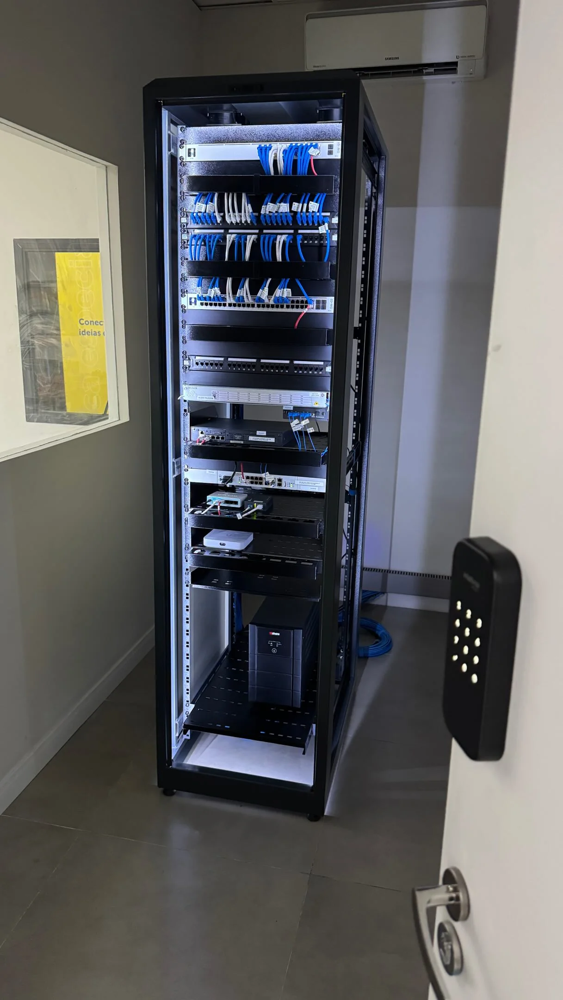

Gerenciamento & Consultoria em Informática e TI
Equipar a sua força de trabalho com tecnologias de ponta não é apenas importante, mas fundamental para o sucesso do seu negócio. Essas soluções customizáveis permitem que a sua equipe trabalhe de maneira contínua e colaborativa em um espaço protegido. Sejam quais forem os serviços de TI que você precisa, a Microgate IT Solutions está sempre aqui para fornecer a melhor solução.
Alguns dos serviços oferecidos por nós:
- Visitas de manutenção corretiva ilimitadas;
- Visitas preventivas a cada 7 dias;
- Gerenciamento de estrutura de computadores;
- Manutenção de microinformática - Software e Hardware;
- Canais exclusivos para HELPDESK em horário comercial: WhatsApp, E-mail, Telefone;
- Gerenciamento de E-mail;
- Remoção de Virus;
- Upgrade de hardware;
- Configuração de estações e usuários;
- Criação e configuração de Domínio (Active Directory - AD);
- Criação de Pastas compartilhadas em rede (INTRANET);
- Criação e Configuração backups;
- Configuração e compartilhamento de impressoras;
- Instalação, Configuração e Manutenção de Servidores;

 Solicite um orçamento personalizado agora mesmo!
Solicite um orçamento personalizado agora mesmo!